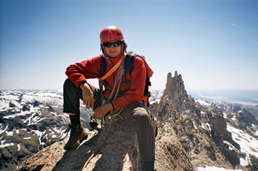
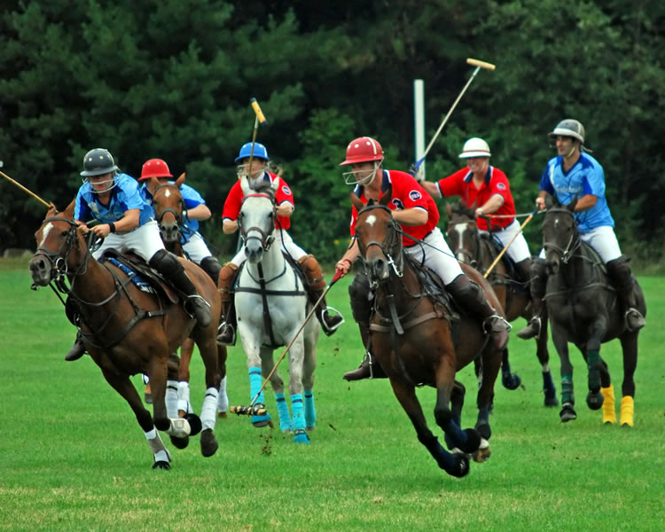

La Argentina deportiva
Para muchas personas lo atractivo de la Argentina es la capital, con su música, su teatro, sus restaurantes y sus barrios étnicos. Para otras personas lo que atrae es la belleza natural del país, desde las cataratas de Iguazú a la magnífica desolación de Patagonia y desde su desértico norte hasta la cordillera andina. Pero los aficionados al deporte conocen otra Argentina que ofrece excelentes oportunidades para la aventura deportiva.
Los deportes de la nieve
San Carlos de Bariloche es una ciudad de 77.600 habitantes que se levanta a orillas del lago Nahuel Huapi a unos 2.000 kilómetros de Buenos Aires. Tiene un parecido con las ciudades y aldeas alpinas de Suiza. Hay construcciones de piedra y madera con todo el sabor alpino que uno pueda imaginar. Los hoteles son auténticos refugios para los aficionados a la nieve. Alrededor están las montañas, que son como grandes gigantes tocados por la nieve. La ciudad está dedicada por completo al turismo de la nieve. Muchas personas, sobre todo los amantes del esquí, pasan allí las vacaciones en busca del manto blanco donde no van a perder la forma física.
La estación de esquí más importante de San Carlos de Bariloche es Cerro Catedral, que comparte su nombre con la montaña de 2.388 metros que la rodea. Es la estación más grande del hemisferio sur. En sus pistas se puede practicar tanto esquí alpino como nórdico. Dedicada en exclusiva a este deporte, Cerro Catedral cuenta con una pequeña villa al más puro estilo suizo. Chalés de estilizada figura combinan paredes de piedra y tejados de pizarra.
Los deportes acuáticos
En los primeros días del verano argentino, San Carlos de Bariloche se convierte en punto de encuentro de los practicantes de los deportes acuáticos. A pocos kilómetros al norte de Bariloche está la ruta de los siete lagos y hacia el sur hay otros dos lagos grandes. La pesca de trucha en Argentina está localizada en esta región. Comenzando en Bariloche, se puede proceder a la ciudad de Esquel o a Junín de los Andes. Son los mejores centros para la pesca en la nación, particularmente desde febrero hasta mediados de abril, cuando abundan las enormes truchas en sus lagos.
La escalada
También se puede practicar la escalada alrededor de Bariloche. Además del Cerro Catedral, está el monte Tronador, que con sus 3.554 metros es el pico más alto de esta zona de los Andes. Acceder a este punto es una hermosa y dura excursión y una maravilla para los que buscan aventura. Los primeros hombres que conquistaron la cima del Tronador fueron Germán Claussen (1934) y Otto Meiling (1937). Meiling fue veterano guía que ascendió este monte más de sesenta veces. El último refugio antes de llegar a la cima del Tronador lleva su nombre; el cerro Otto que está cerca también homenajea a este hombre que enseño a cientos de personas las técnicas de escalada.
La Argentina también ofrece otras aventuras en algunos de los más espectaculares paisajes del mundo, como los del parque nacional Torres del Paine en Patagonia, al sur del país. Allá se puede hacer paseos de largo kilometraje acampando a lo largo del camino. En el parque el impacto visual es impresionante por los afilados pilares de granito que ascienden más de una milla hasta romper las nubes.
Los deportes de las pampas
Alrededor de la capital de la Argentina se extienden las pampas, que son tierras dedicadas a la cría del ganado. Las pampas argentinas están repletas de estancias o ranchos grandes donde viven los gauchos que cuidan el ganado. También en las estancias entrenan los famosos jugadores de polo, el orgullo de la Argentina. Actualmente muchas de estas estancias se han convertido en lugares de turismo y ofrecen vacaciones para los que quieren escaparse de la vida urbana y el estrés. En la estancia se puede pescar, montar a caballo y recorrer las pampas, pasear en bicicleta, kayak o canoa o aprender a jugar al polo. Pero también se puede nadar en la piscina y después sentarse a leer un buen libro. 
Además de la acción y aventura de los deportes argentinos se puede gozar de otra tradición nacional: la comida. La gastronomía argentina está basada en la famosa carne de las pampas pero con influencia italiana, española, francesa, alemana y suiza. Para los argentinos la comida es un ritual para ser disfrutado con amigos y familiares. Para muchos no hay nada mejor en el mundo.